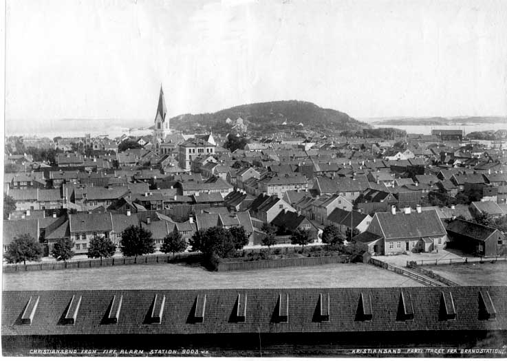
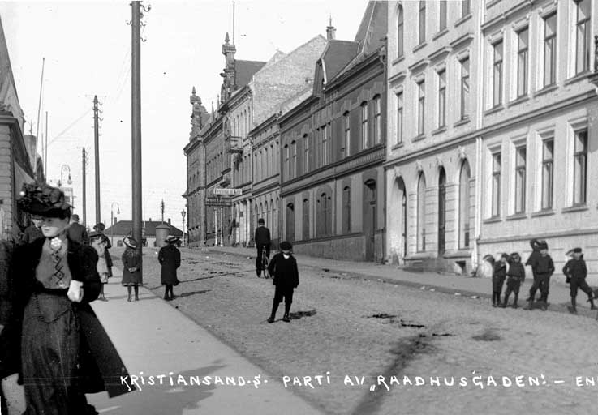
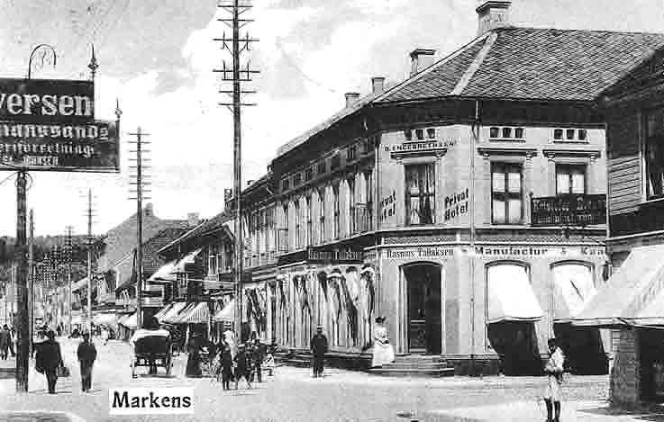

Gatene i gamle Kristiansand
Tekst: Tekstene er laget i samarbeid med Vest-Agder Fylkesmuseum.
Foto: fra Vest-Agder Fylkesmuseums bildearkiv
Foto: Vest-Agder Fylkesmuseum, fra Riksarkivet: Kart fra 1662.
Utsnitt av et kart fra 1662. Det fulgte en handelsprivilegie-søkand til Kongen i København. Byen var 21 år gammel, og kanskje vi kan si nettopp "myndig".
Foto: Vest-Agder Fylkesmuseum, arkiv nr. 5162
Ennå bebyggelse bare mot sjøen. Det indre av Kvadraturen lå i mange år som en snauhogd sandmo. Gravane, den utgravde kanalen, kom tidlig, og ble vedlikeholdt med tollinntekter. Vesterhavnen gav vinter-bekyttelse for store skip, også orlogsfartøy.
Foto: Vest-Agder Fylkesmuseum, arkiv nr. 5162
Vesterhavnen var lenge for grunn for store fartøy. Bro ut til en tidlig skanse på holmen vi i dag kaller Festningen. Brukbare ankringsforhold for vinteropplag langs elvebredden. Og tømmerfløting, både fra Otra, og fra Topdalselva.

Foto: Vest-Agder Fylkesmuseum, arkiv nr. 2
Fra Baneheia, før brannen 1880, med den gamle domkirken. Markensgaten, ut til "marka", løper mot oss fra Østerhavnen, og stenges av en bygning som allerede da kaltes "Slottet".
Foto: Vest-Agder Fylkesmuseum, arkiv nr. 5013
Kristiansand sett fra Bellevue mellom 1885 og 1892. I forgrunnen Paviljongen og KMV. I forgrunnen sto i byens første tid to galger og en steile: Et hjul på toppen av en stake, der lemlestede forbryterlik ble lagt, til avskrekking.
Foto: Vest-Agder Fylkesmuseum, arkiv nr. 5004
Kristiansand mellom 1885 og 1892 sett fra Baneheia. I forgrunnen Reperbanen og Banehaven, og fasaden på husrekka mot Tordenskjoldsgate. "Hospitalet" (som ennå står) ytterst til venstre, deretter huset til hospitalets "spisemester" Aanen Jacobsen.
Foto: Vest-Agder Fylkesmuseum, arkiv nr. 5004 utsnitt
Samme bildet i utsnitt. Tre generasjoner vinduer: Gamle smårutede, i huset bak, ble skiftet ut med moderne engelske skyvevinduer (til høyre i forgrunnen), som passet dårlig til vårt klima. Og så kom Sveitserstilen, i vinduene midt på bildet. Venstre halvpart av dette huset ble revet -
Foto: Vest-Agder Fylkesmuseum, arkiv nr. 5003
- da Kirkegaten ble forlenget inn i "Nybyen". Sett fra Baneheia mellom 1885 0g 1892. Kirkegaten -.
Foto: Vest-Agder Fylkesmuseum, arkiv nr. 270-8
- og midt i bildet, over ordet "Kirkegaden", ser vi den gjenstående halvdel av huset. "Nybyen" i forgrunnen. Og ny brannstasjon med spisst tårn etter 1892.
Foto: Vest-Agder Fylkesmuseum, arkiv nr. 5179
Øverst i Kirkegaten mot Baneheia. Det avskårne huset, sett mot Baneheia.
Foto: Vest-Agder Fylkesmuseum, arkiv nr. 5004 utsnitt
Bygningene øverst i Kirkegaten. Domkirken sto ferdig i 1885, mens brannstasjonen til venstre brant i 1892. Slik kan bildet dateres.
Foto: Vest-Agder Fylkesmuseum, arkiv nr. 5040
Fra kirkespiret: Krysset Markens / Rådhusgaten. Berges bokhandel helt til høyre. Rådhuset til venstre i bildet, en murbygning der senere posthuset kom. Den ble revet før brannen i 1892. Helt til venstre: Langfeldts hus fra 1810, som avgrenset torget.
Foto: Vest-Agder Fylkesmuseum, arkiv nr. 5041
Kristiansand sett fra kirkespiret mot Vesterhavnen. Markensgate, med Berges bokhandel og Wintersborg. Til høyre løper Gyldenløvesgate mot havnen. Før 1892. De to patrisierhusene mot Vestre Strandgate står ennå.
Foto: Vest-Agder Fylkesmuseum, arkiv nr. 5037
Kristiansand sett fra kirkespiret mot Karantenehavnen på Odderøya, før 1892.
Foto: Vest-Agder Fylkesmuseum, arkiv nr. 5326
Fra Bellevue, etter 1900. Jernbanen er kommet. Vei mot "Renneville" til venstre. Gundersens Vinforretning stor bygning helt til høyre.
Foto: Vest-Agder Fylkesmuseum, arkiv nr. 5043
Fra kirkespiret, mot Lund. Gyldenløvesgate til venstre og Rådhusgaten til høyre. Før 1892. Johnsens kolonialforretning. Wilhelm Krags fødested?
Foto: Vest-Agder Fylkesmuseum, arkiv nr. 18
Fædrelandsvennen nærmest, så Knudsens hjørne, og Stendals forretning. Fra mellomkrigstiden.
Foto: Vest-Agder Fylkesmuseum, arkiv nr. 5074
Skøyting på det oppdemte Møllevannet. Gamle Flekkerøvei, som Daniel Isaachsen og Andreas Heyerdal bygget i 1810, ut il sine landssteder . Til venstre Christiansands Bryggeri, i bakgrunnen Topdalsfjorden.
Foto: Vest-Agder Fylkesmuseum, arkiv nr. 5
Egsveien, nord for det gamle fergestedet.
Foto: Vest-Agder Fylkesmuseum, arkiv nr. 1064
Ved Rundingen, opp Steinkleiva, med Kuholmsveien utenfor bildet til høyre. Hamreheia bak.
Foto: Vest-Agder Fylkesmuseum, arkiv nr. 5078
Portal til Oscar IIs besøk i Kristiansand 1891.
Foto: Vest-Agder Fylkesmuseum, arkiv nr. 5263
Østerveien, i mellomkrigstiden. Til venstre "Busken", ned mot den fremtidige Lovisenlund skole. "Oddemarka" mot høyre.
Foto: Vest-Agder Fylkesmuseum, arkiv nr. 5277
Gården Jægersberg. Industrimannen Jægersberg startet på begynnelsen av 1800-tallet møller og papirfabrikk. Senere barnehjemmet Ebenezer.
Foto: Vest-Agder Fylkesmuseum, arkiv nr. 5285
Ved Jægesberg.
Foto: Vest-Agder Fylkesmuseum, arkiv nr. 5419
Sett fra kirken, over torget. Fædrelandsvennen utenfor bildet til venstre.
Foto: Vest-Agder Fylkesmuseum, arkiv nr. 5011
Kristiansand sett fra Møllevannsveien 1880. Kristian IVs gate (til venstre) fortsetter i en sving ut mot Bellevue (til høyre). Katedralskolen øverst til venstre.
Foto: Vest-Agder Fylkesmuseum, arkiv nr. 5011 utsnitt
Utsnitt av forrige bilde: Høyslått i byen. Grensen mellom by og land var lenge uskarp. Mørkt tak midt i bildet: Stort hus bygd 1807 av Eidsvoldsmannen Ole Clausen Mørch. Ble senere Carl Johan Minne skole, nå Domus.
Foto: Vest-Agder Fylkesmuseum, arkiv nr. 69
Renneville, nå Møllevannsveien. Bakken ble tidligere kalt "rennebakken". Kanskje etter mønster fra det fine Bellevue ble så Rennebakken til Renneville, som muligens stammer fra franske "Rend de Ville" - "kanten av byen". Frelsesarmeens barnekrybbe til venstre.
Foto: Vest-Agder Fylkesmuseum, arkiv nr. 1008
Æresport og stor stas ved kong Oscar IIs besøk i 1891, ved jernbanens åpning. Hus i sveitserstil.
Foto: Vest-Agder Fylkesmuseum, arkiv nr. 1 negativ
Markensgaten, med Tollbodgaten på tvers. Gjensidige helt til høyre.
Foto: Vest-Agder Fylkesmuseum, arkiv nr. 5162
Nærbilde av samme. Trehuset midt i bildet er nå borte. Der ligger Sparebanken Pluss. Ledningsnettet, både strøm og telefon/telegraf, gikk luftveien, på stolper. Øverst i Markensgate det gamle "Slottet". Navnet Markensgaten: Som fører ut til byens beitemark. Årene etter 1910.
Foto: Vest-Agder Fylkesmuseum, arkiv nr. 2-134
Østre Strandgate, ned mot Østerhavnen. Sementstøperi, med rør kanskje til utbygging av byens kloakksystem.

Foto: Vest-Agder Fylkesmuseum, arkiv nr. 26 utsnitt
Gyldensløvesgate med parken. Latinskolen til venstre midt i bildet. Midt i bildet: Her kom Mållagets nybygg. Helt til høyre Agder Meieri. Kanskje omkring 1910?
Foto: Vest-Agder Fylkesmuseum, arkiv nr. 30 utsnitt
Samme gatestrekning, men i motsatt retning, med parken til høyre. Latinskolen, og Mållagshjørnet. Til øyre senere Løveapoteketet.
Foto: Vest-Agder Fylkesmuseum, arkiv nr. 30 utsnitt
Lampeskift, med heisanordning på lyktestolpen til venstre. Hadde elektrisitetsverkets folk uniform?
Foto: Vest-Agder Fylkesmuseum, arkiv nr. 5231
Kirkegaten sett fra Dronningens gate, antagelig i dagene da Oscar II besøkte byen i 1891. Den tids politiuniformer. Sett fra Dronningens gate mot kirken. Til høyre gamle hus med gavlsiden ut mot gaten.
Foto: Vest-Agder Fylkesmuseum, arkiv nr. 2-139
Torget mellom 1885 og 1892.
Foto: Vest-Agder Fylkesmuseum, arkiv nr. 20
Etter brannen i 1892. Rådhuset til venstre, bygd i 1860-årene. Bak torgbodene: Grosserer Bellesens hus.
Foto: Vest-Agder Fylkesmuseum, arkiv nr. 3-1
Tegning av domkirken som brant i 1880, sett fra torget. Kirkegaten, på tegningen loddrett til høyre, gjorde en sving rundt gravplassen. Tårn og inngang mot vest, mens nåværende domkirke har tårn og hovedinngang mot øst. Baneheia i bakgrunnen.
Foto: Vest-Agder Fylkesmuseum, arkiv nr. 3-1 utsnitt
Utsnitt av forrige bilde. Dette er kirke nummer tre. Alle de første kirkene hadde inngang mot vest. Denne sørlige armen fikk hovedinngangsdøren.
.jpg)
Foto: Vest-Agder Fylkesmuseum, arkiv nr. 127
Latinskolen midt i bildet, og den gamle domkirken med tårnet vendt mot latinskolen.
Foto: Vest-Agder Fylkesmuseum, arkiv nr. 5159
Gyldenløvesgate. Til høyre Markensgate. Før 1880.

Foto: Vest-Agder Fylkesmuseum, arkiv nr. 5160
Samme parti av Gyldenløvesgate. I forgrunnen krysser Markensgate. Bygningen til venstre brant i 1880. Der kom så senere Rasmus Tallaksen.

Foto: Vest-Agder Fylkesmuseum, arkiv nr. 5239
I 1738 sto denne domkirken ferdig. Sett fra Øvre Torv. Wergelandsparken er nettopp anlagt. Før 1880.
Foto: Vest-Agder Fylkesmuseum, arkiv nr. 5235
Domkirken sett fra torvet, med fontenen omtrent der hvor Henrik Wergeland ble reist i 1908(?). Før 1889.

Foto: Vest-Agder Fylkesmuseum, arkiv nr. 564
Foto: Vest-Agder Fylkesmuseum, arkiv nr. 5232
Kirkegaten, krysset av Tollbodgaten, før 1880. Helt til venstre nå det nye posthuset. Engelske skyvevinduer.

Foto: Vest-Agder Fylkesmuseum, arkiv nr. 5240
Domkirken sett fra Gyldenløvesgate, Hjørnet av Gyldenløvesgate og spaserveien til Rådhusgaten, (Nå Biblioteket). Før 1880.
Foto: Vest-Agder Fylkesmuseum, arkiv nr. 5232
Kirkegaten, krysset av Tollbodgaten, før 1880. Helt til venstre nå det nye posthuset. Engelske skyvevinduer.
Foto: Vest-Agder Fylkesmuseum, arkiv nr. 5240
Domkirken sett fra Gyldenløvesgate, Hjørnet av Gyldenløvesgate og spaserveien til Rådhusgaten, (Nå Biblioteket). Før 1880.

Foto: Vest-Agder Fylkesmuseum, arkiv nr. 5245
Kristiansand gamle kirkegård og Kristiansandsfuruen. I bakgrunnen til venstre Rådhuset. Til høyre den sørlige husrekke mot Nedre Torv. 1880. Kirken bak oss til venstre. Kirkegården ble nedlagt i begynnelsen av 1830-årene.

Foto: Vest-Agder Fylkesmuseum, arkiv nr. 5243
Ruinene av domkirken bygd 1838 sett fra Nedre Torv etter brannen i 1880.
Foto: Vest-Agder Fylkesmuseum, arkiv nr. 2-155
Elektrisiteten kom til Kristiansand i 1902.
Foto: Vest-Agder Fylkesmuseum, arkiv nr. 2-123
Den nye domkirken sett fra Kirkegaten, før brannen i 1892.

Foto: Vest-Agder Fylkesmuseum, arkiv nr. 5230 utsnitt

Foto: Vest-Agder Fylkesmuseum, arkiv nr. 597
Hit kom fontenen da Wergeland-statuen overtok dens plass i parken. Så ble den helt fjernet, inntil den for få år siden igjen kom tilbake, men nå nærmere Kirkegaten.
.jpg)
Foto: Vest-Agder Fylkesmuseum, arkiv nr. 2-125
Vi ser opp Bryggebakken, omkring 1900. Børsbygningen var opprinnelig en privarbolig, men fikk på slutten av 1800-tallen gavl med søyler, og ble Børs. Christiansands Tidende midt i bildet.
Foto: Vest-Agder Fylkesmuseum, arkiv nr. 2-132 utsnitt
Klasseskille: Kansje bryggearbeider til venstre, og til høyre fint folk på vei til rutebåten?
Foto: Vest-Agder Fylkesmuseum, arkiv nr. 2-132 utsnitt
Utenfor Ernst hotell: Promenade med fornem kurvflettet barnevogn, ca 1900, -
Foto: Vest-Agder Fylkesmuseum, arkiv nr. 5162
- og samme knipset et minutt senere, av fotograf Køhn.

Foto: Vest-Agder Fylkesmuseum, arkiv nr. 5139
Rådhusgatens allmenning. Børsbygningen mens den ennå var Mathiessens privathus, uten søyler. Ca 1890. Til høyre for Børsen: Det gamle rådhuset er revet, og stillaser er satt opp for nybygg. Bak stillasene: Langfeldts hus stenger ennå mot torget. Daniel Isaachsens bolig til høyre, ble senere Ernst hotell. Helt til høyre: Blaakorskafeen
Foto: Vest-Agder Fylkesmuseum, arkiv nr. 5139 utsnitt
Utsnitt
Foto: Vest-Agder Fylkesmuseum, arkiv nr. 5162
Bryggebakken, der syklisten kjører slalom gjennom hestelort, med fin frue til venstre i bildet. Barneerindring: På vinterføre var det så skjurt for kjelken når det var hestelort i bakken!
Foto: Vest-Agder Fylkesmuseum, arkiv nr. 2-110
Fra Oscar IIs besøk i 1891. Rådhusgaten med Wintersborg til høyre. Til venstre er det gamle rådhuset nettopp revet, og nybygg skal reises.
Foto: Vest-Agder Fylkesmuseum, arkiv nr. 5171
Gamle Wilds hus, senere Nils Moe, og så Ekberg. Vestre Strandgate 24. Tidlig på 1900-tallet. Ennå i dag samme praktfulle portal mot Strandgaten, men trapp er fjernet, for ikke å sperre fortauet. Nå er det jo biltrafikk i gatene, og farlig der for fotgjengere.
Foto: Vest-Agder Fylkesmuseum, arkiv nr. 2-138
Fra Gyldenløve / Vestre Strandgate. Bygget står ennå, med Vietnamesisk kolonialbutikk.
Foto: Vest-Agder Fylkesmuseum, arkiv nr. 278
I dag kafe på Fylkesmuseet. Sto ved jernbanen, der Hånesbygget nå er. Familien Mørchs eiendom, som ble gamlehjem på 1900-tallet.
Foto: Vest-Agder Fylkesmuseum, arkiv nr. 5162
Tobakksfabrikken i Vestre Strandgate, med Tollboden utenfor bildet til høyre. Reinhardts bygg i neste gatekryss.
Foto: Vest-Agder Fylkesmuseum, arkiv nr. 414-18
Kristiansand har vært en tobakksby. Tobakken kom hit på allerede på 1600-tallet, med flere tobakksvinkler. Vinkel er det hollandske ordet for butikk, og kom her til å bety tobakksfabrikk. Tobakken ble røykt, først i krittpiper, så i lange merskumspiper. Sigaretten kom først rundt første verdenskrig.
Foto: Vest-Agder Fylkesmuseum, arkiv nr. 424
Lysthus fra en av bakgårdene. Hvilken?
Foto: Vest-Agder Fylkesmuseum, arkiv nr. 432
Det gamle teateret, bygget etter branden i 1892, og revet i 1960-årene.
Foto: Vest-Agder Fylkesmuseum, arkiv nr. 5184
Ekserserhuset står ennå, i Tordenskjoldsgate, Holbergsgate til høyre. Bygd i 1808, ved siden av underoffiserskolen fra 1880-årene. Garnisonens ekserserhus, med ekserserplass rett over gaten.
Foto: Vest-Agder Fylkesmuseum, arkiv nr. 5228
Bygningen på hjørnet av Festningsgaten til venstre og Kongensgate til høyre, Har vært kommandantbolig. Sammen med det gamle Rådhuset i mange år eneste våningshus i byen bygget i mur. Før 1892.
Foto: Vest-Agder Fylkesmuseum, arkiv nr. 54
Foto: Vest-Agder Fylkesmuseum, arkiv nr. 56
Brannstasjonen gjenoppbygd etter brannen i 1892. Ble drevet som en militær organisasjon: En avdeling skulle redde folk, en annen reddet gjenstander, en tredje la våte segl over bygninger. Andre hadde ansvar for sprøyter og slokningsutstyr. Hver avdeling sto ved sin kommandant under avdelingens fane.
Foto: Vest-Agder Fylkesmuseum, arkiv nr. 65
Børs-lysthuset sto mot nåværende Amigos-resturant. Ernst utenfor bildet til høyre. Lysthuset står nå på Vest-Agder Fylkesmuseum. Omkring 1900.

Foto: Vest-Agder Fylkesmuseum, arkiv nr. 5162
Gyldenløvesgate, mellom Festningsgate og Holbergsgate. Små bolighus, med gjerne tre-fire store familier stuet sammen i hvert. På slutten av 1800-tallet hadde barnedødeligheten avtatt, og antall barn i familien økte.
Foto: Vest-Agder Fylkesmuseum, arkiv nr. 10
Vestre Strandgate, på hjørnet av Tollbodgaten. Husene står ennå. Bilen til venstre kan antyde omkring 1930.
Foto: Vest-Agder Fylkesmuseum, arkiv nr. 114
Til venstre Gundersens Vin-engros, som skjuler Jernbanen. I Gundersenbygget kom senere Agder Kjøpelag og Agder Tidend. Nåværende Amigos helt til høyre. Sjøhusene i forgrunnen til venstre ble avløst av bussterminalen.
Foto: Vest-Agder Fylkesmuseum, arkiv nr. 12
Odd Fellow. Midt i bildet skimtes Turnforeningen i bakgrunnen.
Foto: Vest-Agder Fylkesmuseum, arkiv nr. 5162
Før brannen i 1892 sto en svær trebygning mot høyre, stiftamtmannens bolig. Bygget helt til høyre er nå revet, til en åpen plass. Gaten brolagt med "kålrabistein". Søndenfjeldske Privatbank skimtes i det fjerne.
Foto: Vest-Agder Fylkesmuseum, arkiv nr. 2-140
Festningsgaten opp til venstre. Hjørnehuset midt i bildet ble etter brannen avløst av Odd Fellow-bygningen. Helt til venstre rådmann Johan Henrik van Kervels "Det hollandske hus". Engelske skyvevinduer og stående panel, som var vanlig på 1700-tallet.
Foto: Vest-Agder Fylkesmuseum, arkiv nr. 156
Kristiansands Dampkjøkken i Bryggebakken, med Ernst hotell til høyre.

Foto: Vest-Agder Fylkesmuseum, arkiv nr. 23
De øverste kvartalene i Markens, med "Slottet" som det sto inntil ca 1940. I. C. Johnsens bygg midt i bildet. I. C. Johnsen hadde sitt sommersted på Klappane, som følgelig ble kalt for Issejordet og Isseheia.
Foto: Vest-Agder Fylkesmuseum, arkiv nr. 2-5
Møllevannsveien. Bygningen står ennå. Frelsesarmeens Barnekrybbe helt til høyre.
Foto: Vest-Agder Fylkesmuseum, arkiv nr. 26
Markensgaten sett fra Glasmagasinet. Tollbodgaten krysser midt i bildet. Bygningene er revet. Baneheia i bakgrunnen.
Foto: Vest-Agder Fylkesmuseum, arkiv nr. 27
Skippergaten krysser i forgrunnen. Sett mot Baneheia.
Foto: Vest-Agder Fylkesmuseum, arkiv nr. 270-12
Gyldenløvesgate krysser Markens. Baneheia i bakgrunnen til venstre.
Foto: Vest-Agder Fylkesmuseum, arkiv nr. 270-9
Foto: Vest-Agder Fylkesmuseum, arkiv nr. 28
Markensgate sett mot sjøen. Midt i bildet Sønnik Johnsen.
.jpg)
Foto: Vest-Agder Fylkesmuseum, arkiv nr. 2-9
Gartnerløkka til venstre. Misjonshuset midt i bildet. Begynnelsen på Setesdalsveien. Frobusdalen inn til høyre, helt i bakgrunnen.
Foto: Vest-Agder Fylkesmuseum, arkiv nr. 2-9 utsnitt
Utsnitt fra forrige bilde: Vannpost. Gammel hestedrikke, fra før bilenes tid.
Foto: Vest-Agder Fylkesmuseum, arkiv nr. 39
Dronningensgate kaltes tidligere "Brogaden". Broen i bakgrunnen. Filadelfia bygde midt i bildet. Wilsons bygg nå helt til venstre.
Foto: Vest-Agder Fylkesmuseum, arkiv nr. 41
Markens, med Berges bokhandel helt mot venstre, og Rasmus Tallaksen midt i bildet. Kanskje omkring 1910.
Foto: Vest-Agder Fylkesmuseum, arkiv nr. 5148
Markensgate sett fra Gyldenløvesgate, med Rasmus Tallaksens hjørne til høyre. Gatearbeid. Hva skjer? Kanskje gassledning legges?

Foto: Vest-Agder Fylkesmuseum, arkiv nr. 5153
Markensgaten sett fra Tordenskjoldsgate, mot sjøen. Grøntofts hus til høyre. 1860 eller 1870 årene.
Foto: Vest-Agder Fylkesmuseum, arkiv nr. 5177
Vestre Strandgate 44, Mørch-huset, senere gamlehjem, og så flyttet til Fylkesmuseet. Kristian IVs gate på tvers foran bildet.
Foto: Vest-Agder Fylkesmuseum, arkiv nr. 5199
Østre Strandgate sett fra Vestre Strandgate, før brannen 1892. Opprinnelig enetasjes bygning, påbygd tidlig på 1800-tallet. Nederste etasje i tømmer, andre etasje i bindingsverk. Skodder for engelske skyvevinduer, og liggende panel, etter engelsk mønster. Blåglaserte hollandske takstein.
Foto: Vest-Agder Fylkesmuseum, arkiv nr. 5200
Samme gateparti, nærmere. Markensgate første tverrgate, med Rosenkildes hjørnehus.
Foto: Vest-Agder Fylkesmuseum, arkiv nr. 5201
Østre Strandgate nr 11, nå Frelsesarmeen. Familien Henriksen, foto 1866. - Et kjent bilde, som finnes i bedre kvalitet.
Foto: Vest-Agder Fylkesmuseum, arkiv nr. 5258
Før krigen, med den gamle broen, før den nye som kom i 1938. Sett mot Lund, der Filialen skimtes midt i bildet. I dag Reinhardt til høyre.
Foto: Vest-Agder Fylkesmuseum, arkiv nr. 2-120
Vestre Strandgate inn mot venstre, med Ernst hotell utenfor bildet.. Til venstre: Murbygning reist av skotske bygningsfolk i 1790-årene. Havnebygget midt i bildet.
Foto: Vest-Agder Fylkesmuseum, arkiv nr. 2-124
Fædrelandsvenn-hjørnet på torget.
Foto: Vest-Agder Fylkesmuseum, arkiv nr. 2-128
Markensgaten, Tollbodgaten inn til venstre.
Foto: Vest-Agder Fylkesmuseum, arkiv nr. 2-137
Rådhusgaten til venstre, Festningsgaten mot høyre. Et av Kristiansands eldste hus, nå på Fylkesmuseet. Privatbolig, så politistasjon i mellomkrigstiden.
Foto: Vest-Agder Fylkesmuseum, arkiv nr. 2-161
Tollbodgaten opp til venstre, Vestre Strandgate mot høyre. Isaach Isaachsen bodde her på begynnelsen av 1800-tallet.
Foto: Vest-Agder Fylkesmuseum, arkiv nr. 2-19
Kirkegaten innover mot høyre, med Skippergaten som første tverrgate. Katedralskolen ble siden fordoblet, helt frem til venstre bildekant.
Foto: Vest-Agder Fylkesmuseum, arkiv nr. 25
Katedralskolen øverst til venstre, med pedellens hus under.

Foto: Vest-Agder Fylkesmuseum, arkiv nr. 29
Skippergaten sett fra Markensgate. Dalangården ligger nå her.
Foto: Vest-Agder Fylkesmuseum, arkiv nr. 31
Foto: Vest-Agder Fylkesmuseum, arkiv nr. 427
Kronprinsens gate, en av "Smågadane". Også kalt Posebyen, etter "repose", hvile: Dette var boligkvarter for garnisonens soldater. Senere boliger for arbeidere og håndverkere.
Foto: Vest-Agder Fylkesmuseum, arkiv nr. 428
Foto: Vest-Agder Fylkesmuseum, arkiv nr. 431
Rådhusgaten / Kronprinsensgate, med Metodistkirken øverst til høyre. I huset helt til venstre bodde før 1800 familien Brunbeck. Gamle hus, men med vinduene senere pyntet opp i sveitserstil etter 1860.
Foto: Vest-Agder Fylkesmuseum, arkiv nr. 437
Mer modernisering: I husene til høyre er vinduene skiftet ut i nyere tid.
Foto: Vest-Agder Fylkesmuseum, arkiv nr. 439
Takstein: Beste og dyreste fra Holland, god stein også fra Østlandet, og billig og dårlig stein fra lokale teglverk. Sveitserstilvinduer etter 1860. Tidligere var de lange glassene delt av smal sprosse, så alle ruter ble like store.
Foto: Vest-Agder Fylkesmuseum, arkiv nr. 440
Fra raseringsperioden, før bevaringstanken slo igjennom.
Foto: Vest-Agder Fylkesmuseum, arkiv nr. 48
Sladrespeil foran vinduet øverst il høyre: Før bilenes tid skjedde ting langsomt i gatene, og kunne følges i speilet. Stående panel helt til slutten av 1700-tallet, da liggende panel gradvis overtok, etter engelsk mønster. Vestlandet med fuktig klima har alltid brukt liggende panel, der nederste råtne bord kunne skiftes.
Foto: Vest-Agder Fylkesmuseum, arkiv nr. 5152
Skippergaten til høyre. Markensgaten til venstre. Brukne hjørner: Mote fra 1800 også i Kristiansand, etter mønster fra København. Første eksempel: Gimle gård. Gass-gatelampe.
Foto: Vest-Agder Fylkesmuseum, arkiv nr. 5156
Hjørnet Tordenskjoldsgate og Markensgate sett fra Setesdalsveien ca 1930. Helt til høyre: Hestedrikke tildekket for vinteren. Huset bak står i dag på Fylkesmuseet.
Foto: Vest-Agder Fylkesmuseum, arkiv nr. 5165
Fra Festningsgatens østre husrekke mellom Rådhusgaten og Gyldenløvesgate. Gamle hus, med stående panel.
Foto: Vest-Agder Fylkesmuseum, arkiv nr. 5175
Ved Elvegaten. Plankegjerder var vanlig rundt eiendommene. Billig hun-bordkledning til venstre.
Foto: Vest-Agder Fylkesmuseum, arkiv nr. 5181
Irsk portal, bygget omkring 1860, i sen-empire. Like før sveitserstilen, som fjernet den smale tverrsprossen i vinduet. Da bilene kom, ble fortauene smalere, og trappene måtte fjernes for ikke å stenge dem.
Foto: Vest-Agder Fylkesmuseum, arkiv nr. 5233
Til venstre Fædrelandsvenn-hjørnet. Øvre Torv nærmest og Nedre Torv lengst borte, sett fra Rådhuset. Langfelds hus lengst til høyre innsnevret torget mot Markensgaten. Trærne til høyre står på den gamle kirkegården ved Domkirken. Før 1892.
Foto: Vest-Agder Fylkesmuseum, arkiv nr. 608
Foto: Vest-Agder Fylkesmuseum, arkiv nr. 64
Ombygd til litt sveitserstil, med takskjegget lenger ut, og pynt over vinduene.
Foto: Vest-Agder Fylkesmuseum, arkiv nr. 68
Tordenskjoldsgate, øverst i Festningsgaten, ved tunnel-mundingen. Typisk sveitser.